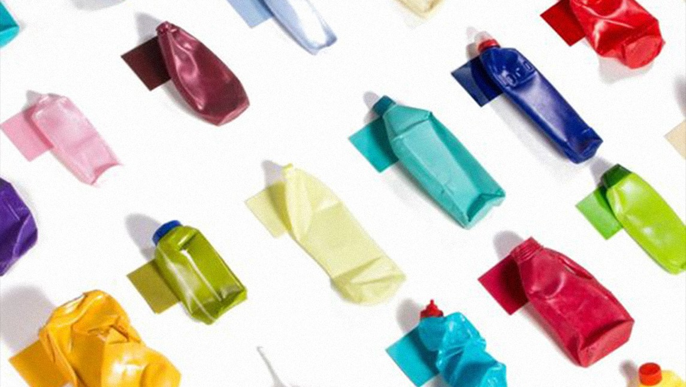

El reporte de la brecha en la economía circular, Global Circularity Gap Report, en 2022 indicó que globalmente sólo reciclamos un 8.6% de los materiales que descartamos. Nuestra capacidad de recuperar y reciclar parece que fracasa en cubrir el ritmo de consumo actual. La eficiencia y avances en reciclaje no pueden seguir el ritmo de consumo de los materiales primarios. “Tenemos un problema de materiales en el lugar equivocado” es una frase muy citada del pionero del cradle-to-cradle, William McDonough. De hecho, la mayoría de los recursos que se encuentran en los productos simplemente se "utilizan", en lugar de "agotarse". Los materiales en sí todavía están disponibles, pero con frecuencia son difíciles de recolectar y recuperar, o no pueden agregarse de una manera que haga viable su recolección. A este problema se le suma un detalle importante a considerar; la huella de carbono que deja lo poco que reciclamos también es notablemente grande. Entonces, ¿cómo hacemos la transición hacia una economía circular?
Veamos que sucede con los distintos materiales que se reciclan. El plástico, considerado uno de los mejores materiales para reciclar, se recicla en un porcentaje bajo, y lo que no se recicla termina en los océanos. La ruta del reciclaje, quemar plásticos para la energía, lleva a emisiones tóxicas de ácido hidroclórico, sulfuro, dióxido de nitrógeno y metales pesados. Distinto es con los biomateriales, que, si no fueron contaminados con aditivos y son quemados en plantas equipadas especiales para biomasa, son una fuente de energía sustentable limpia.
El aluminio y el acero son materiales que pueden ser reciclados sin pérdida de calidad, con mucho menos consumo de energía: 5-10% menos comparada con la producción de aluminio virgen y 25% comparado con acero virgen. De todas maneras, sigue siendo considerablemente más alto comparado con la energía necesaria para producir biomateriales. Su porcentaje de reciclado es alto, un 60% en aluminio y un 70% en acero, y de estos porcentajes 85% es para la construcción. Sin embargo, no hay suficiente material de aluminio y acero reciclable para cubrir la demanda mundial de estos materiales.
El concreto está aumentando con un ritmo entre 30% y 80% pero no reduce la influencia del co2 porque el elemento del concreto más carbono intensivo, el cemento, no es reciclable, entonces debe ser agregado. En la economía circular estos materiales los definen como materiales techno-cycle. El problema de estos materiales no es solo la huella de carbono del proceso del reciclado, sino que son materiales finitos que eventualmente se van a terminar pronto.
La transición hacia una economía Bio-Based usando biomateriales no solo es mejor para el medio ambiente, sino que va a ser inevitable. Pero usar biomateriales también debe ser abordado con cautela, ya que una alta demanda puede llevar nuevamente a la falta de recursos. Se debe respetar el ritmo de la reproducción natural. Esto aplica al uso de la madera dura que tiene alta demanda por ser un buen recurso por su desempeño técnico pero su lento crecimiento la hace susceptible a la deforestación.
Es recomendable que al elegir la madera verifiquemos que esté certificada, ya que garantiza el ciclo de corte de manera responsable por parte del productor. El bambú es otro recurso muy interesante porque crece muy rápido, y como no es una gramínea (un pasto básicamente) no existe la tala en su producción, sino que se poda. Hoy en día ya se fabrican productos en bambú de alta densidad para fabricar pisos y decks de alta resistencia. Las técnicas de construcción con tierra como el tapial o las construcciones en madera creo que deben ser incorporadas de manera esencial en el entrenamiento de las universidades para arquitectos y constructores y no limitarse en el uso del hormigón.
La idea de una economía circular es imitar los ciclos naturales de la naturaleza. Un producto o diseño con metabolismo biológico está básicamente compuesto con materiales que en parte de su ciclo puedan ser descartados en la tierra y se biodegradan. Está claro que toda decisión genera un impacto posterior y es primordial que hoy esté en la agenda de todo diseñador volver a poner en valor los materiales que se usaban pre-revolución industrial. Entonces, ¿cómo hacemos la transición hacia una economía circular? Creo que revisitando la historia y recuperando viejas técnicas que de la mano de la tecnología y la investigación pueden dar resultados bellísimos, saludables y responsables.
¿Qué es la certificación C2C? Cradle to cradle
What is Cradle to Cradle Certified®? - Get Certified
Certificación de la madera
Productos de bambú
MOSO® Bambu | Parquet, Viga, Paneles, Chapa y tarima de exterior